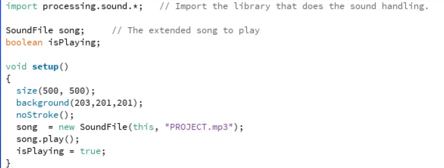
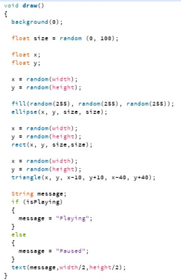
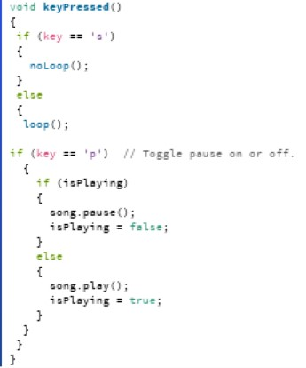

FARHAAN KHANI have done some programming in Python before for A levels. I used a software called Thonny which is much nicer version of Python. |
|||
|
|
|||
Bootcamp 2020: ITERATIVE SHAPESThis is my project for the end of coding Bootcamp I have created a sketch where there are iterative circles, triangles and squares. These shapes spawn randomly at different x and y co-ordinates throughout the piece of code. Theses shapes also have a random colour assigned to the shape when they spawn. I have also added sound to my code a song called River Flows in you by Yiruma. In the key pressed method I have assigned certain letters to do certain jobs. When s or S is pressed the iterative process stops and this can be resumed by pressing any other letter. When p or P is pressed the music stops and this resumed by pressing p or P. Check out the code on Github: https://github.com/Farhaan0Khan/BOOTCAMP-PROJECT | |||
|    | |||